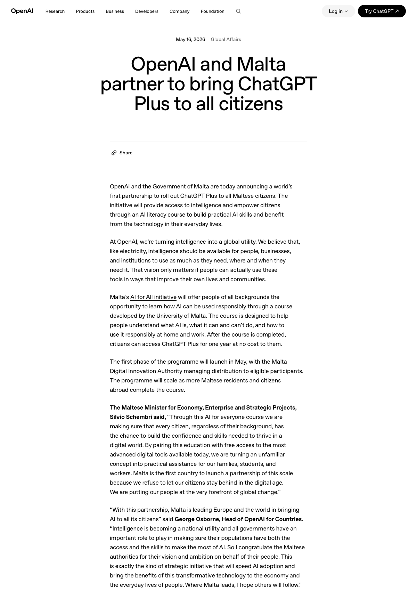

SuuJiKat AI Daily
今日可验证新讯不足 5 条：宁可少，也不回填旧闻
2026-05-17 · AIGC 今日观察
按“仅选 Asia/Shanghai 当天新报道，或与当天重叠的美国官方发布”的规则，今天可核对到的高可信信号不足 5 条，因此本期发布 3 条可验证信号，并明确保留空缺（不回填旧闻）。
今日目录
01｜OpenAI × Malta：把 ChatGPT Plus 变成“国家级 AI 素养 + 普惠入口”的一次试验
02｜电商“仅退款”进入 AI 伪造时代：平台对抗从“凭证”升级为“鉴定能力”
03｜三星劳资危机：AI 红利分配冲突开始反噬“HBM/先进存储”供给侧稳定性
01｜OpenAI × Malta：把 ChatGPT Plus 变成“国家级 AI 素养 + 普惠入口”的一次试验

图：OpenAI 官方页面截图（含标题与关键段落）。
OpenAI 在 2026 年 5 月 16 日发布官方页面，宣布与马耳他政府合作推出 “AI for All” 项目：公民先完成由马耳他大学开发的 AI 素养课程，完成后可获得 1 年 ChatGPT Plus 免费使用；由 Malta Digital Innovation Authority 负责发放，并随课程完成扩大覆盖。海外媒体与路透转述也同步报道该合作。
本期说明
按你的要求，本期只保留“发生了什么 + 原始来源”，去掉判断/解读段落。
来源：OpenAI · Investing.com（路透转述） · Euronews
02｜电商“仅退款”进入 AI 伪造时代：平台对抗从“凭证”升级为“鉴定能力”
图：IT之家原文配图。
IT之家 2026 年 5 月 17 日报道，电商平台“仅退款”出现利用 AI 伪造售后图片的作弊套路；文章也提到国家反诈中心 App 的“AI 内容鉴定”功能在此类场景下被讨论与使用。
来源：IT之家
03｜三星劳资危机：AI 红利分配冲突开始反噬“HBM/先进存储”供给侧稳定性
图：IT之家原文配图。
IT之家 2026 年 5 月 17 日报道，三星内部奖金分配争议升级为劳资危机，员工威胁在 5 月 21 日起发起长时间罢工；这被认为可能影响关键芯片供给与全球 AI 供应链。路透也持续跟进该事件对 HBM/AI 内存供给的潜在冲击。
来源：IT之家 · MarketScreener（路透转述）
来源
1. https://openai.com/index/malta-chatgpt-plus-partnership/
2. https://m.investing.com/news/economy-news/openai-seals-deal-in-malta-to-give-all-maltese-access-to-chatgpt-plus-4694449?ampMode=1
3. https://de.euronews.com/next/2026/05/16/malta-burger-erhalten-chatgpt-plus-gratis-uber-nationales-ki-programm
4. https://www.ithome.com/0/951/422.htm
5. https://www.ithome.com/0/951/415.htm
6. https://www.marketscreener.com/news/at-samsung-the-global-ai-boom-spurred-a-looming-strike-and-deep-divisions-ce7f5bd2df8bf124